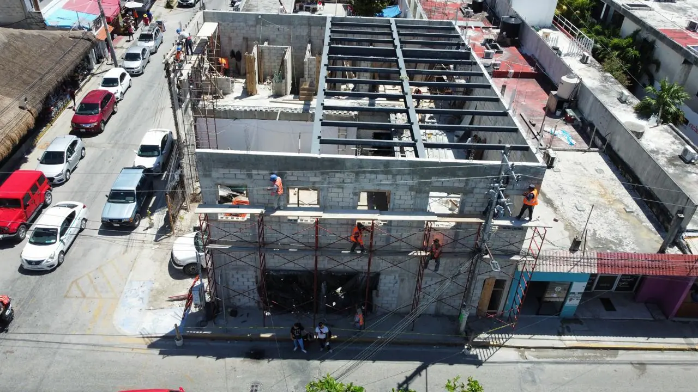

Miles de cuartos de hotel en la Riviera Maya se abastecen cada día por camión y carga aérea. Una bodega cerca del aeropuerto de Cancún queda entre la terminal de carga, la carretera 307 y los hoteles; por eso la buscan distribuidores, paqueterías y proveedores hoteleros. Construimos la nave de acero, andenes, patio y cámaras frías llave en mano.

Claros libres, 8–12 m de altura, lámina y cubierta para viento de huracán.
Andenes, rampas niveladoras, patio de maniobras y radio de giro para tráileres.
Refrigeración y congelación para alimentos, flores y farmacia de los hoteles.
Losas armadas o con fibra sobre base de sascab compactada, planas para racks.
Hidrantes, detección, barda, CCTV y caseta.
Uso de suelo, ambiental, protección civil y acceso carretero.
El Aeropuerto Internacional de Cancún (CUN) es el de mayor tráfico del Caribe mexicano: cuatro terminales de pasajeros, operado por ASUR, al sur de la ciudad sobre la carretera 307 y con estación propia del Tren Maya. El Aeropuerto Internacional de Tulum “Felipe Carrillo Puerto” (TQO) abrió en diciembre de 2023 al sur de Tulum pueblo, también junto a la 307 y al Tren Maya, y está convirtiendo frentes de selva en suelo comercial. Cozumel (CZM) y Chetumal (CTM) son menores, pero siguen el mismo patrón: cada aeropuerto atrae estacionamientos, renta de autos, logística, combustible, hoteles y vivienda para quienes trabajan ahí.
El terreno dentro de la cerca del aeropuerto pertenece al operador y se construye bajo sus contratos y reglas; la mayoría de los proyectos privados están fuera de la cerca, sobre los accesos y la carretera 307. Ahí se revisan tres cosas antes de comprar o diseñar: el uso de suelo y la densidad municipal (PDU), la altura permitida por las superficies limitadoras de obstáculos del aeropuerto (AFAC) y el acceso desde la carretera federal, que requiere su propio permiso para un nuevo entronque.
| Superficie | Presupuesto (MXN) |
|---|---|
| 500 m² | $3,250,000 – $6,000,000 |
| 1,000 m² | $6,500,000 – $12,000,000 |
| 2,000 m² | $13,000,000 – $24,000,000 |
| 5,000 m² | $32,500,000 – $60,000,000 |
Vea también: Naves industriales y bodegas en Cancún
Clúster aeropuerto: Construcción cerca de los aeropuertos · Estacionamientos para aeropuerto · Hoteles de aeropuerto · Departamentos en renta cerca del aeropuerto · Gasolineras cerca del aeropuerto · Hangares para aviación privada · Agencias de renta de autos · Construir cerca del aeropuerto de Tulum · Altura y AFAC cerca de aeropuertos
Envíe el terreno y la idea; revisamos uso de suelo, altura y acceso, y le enviamos un rango de presupuesto. Respuesta en 2 minutos.
Cotizar por WhatsAppSu opinión ayuda a otros propietarios a decidir, y a nosotros a mejorar.
Escribir una reseñaVer reseñas en Google